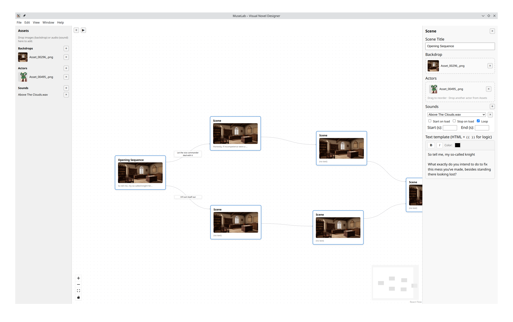
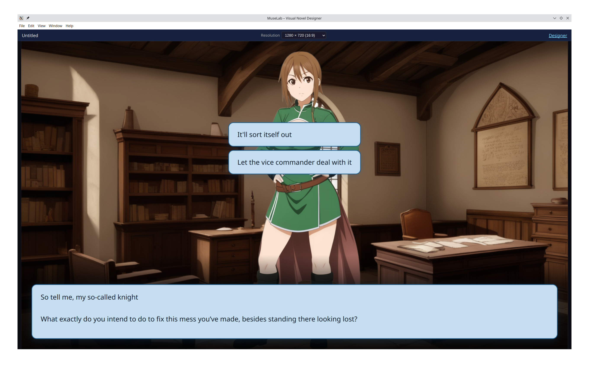

MuseLab combines a node-based story editor with a built-in player. Map your narrative on a canvas, wire up choices and conditions, add art and audio, then press Play.

Everything you need to go from a script outline to a fully playable interactive experience.
Visualize your story's path with an intuitive node-based canvas. Drag, drop, and connect.
Manage backdrops, character sprites, and layered soundscapes for every narrative beat.
Personalize dialogue with variables, conditions, and formatting tags like {{ state.name }}.
Create player agency with conditional edges and persistent state tracking.
Organize backdrops, actors, and sounds in a structured project pane.
Instant live preview. Test choices and logic paths immediately without exports.
Export projects as .mlvn archives to share with collaborators or players.
Available in your browser (installable PWA with offline editing) or as a standalone desktop app.
Define your narrative beats and initial world setup.
Draw connections to build logical story paths and loops.
Assign art and sounds to bring the world to life visually.
Hit play to instantly experience your story in the engine.
The designer is where your journey begins. Drag scenes from the palette, name them, and click and drag from one node to another to create a story transition. No complex syntax, just visual logic.
Play your story instantly — no export step required. What you see in the designer is what the player experiences.

| Feature | Web (Online) | Desktop (Native) |
|---|---|---|
| Node designer | check_circle | check_circle |
| Local file access | check_circle | check_circle |
| Offline editing | After first visit (installable PWA) | check_circle |
| Save / load | Folder-based .mlvn import / export |
Folder-based .mlvn on disk |
| Workflow | Browser file picker & drag-drop | Native save / open dialogs |
| Best for | Try online, install as PWA, share a link | Daily offline use on disk |
Download the desktop app for the most powerful creative experience, or jump right into the browser version.